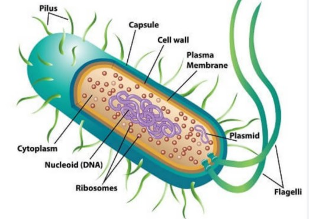
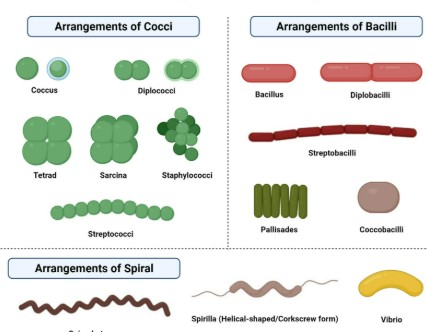
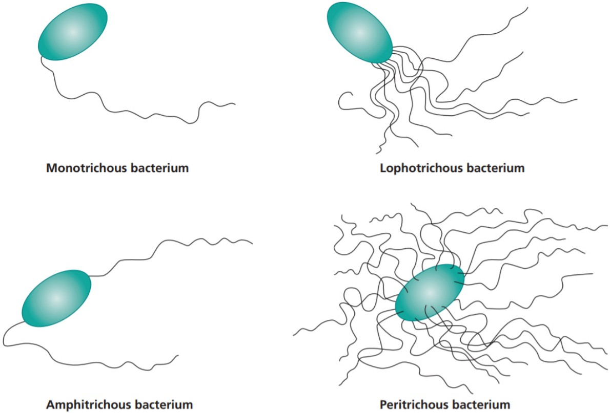

Classification of Bacteria
Bacteria are classified based on various characteristics, including morphology, Gram staining, motility, nutrition, oxygen requirements, and spore formation. This can be broadly categorized into phenotypic and genotypic classification, with phenotypic methods like Gram staining and morphology being widely used for initial identification
1. Morphology:
 Bacteria are classified by morphology based on their shapes and arrangements, including cocci (spherical), bacilli (rod-shaped), and spirilla (spiral). Additionally, factors like their Gram stain reaction, presence of capsules, flagella, and spores are considered in their classification.Key features of Morphology:
- Capsules: A protective outer layer around the cell.
- Lack of cell wall peptidoglycan: Unlike bacteria, archaea lack the peptidoglycan found in their cell walls.
- Flagella: Whip-like structures used for motility.
- Spores: Resistant structures that can survive harsh conditions.
2. Gram Staining:
 Gram staining classifies bacteria into two groups, Gram-positive and Gram-negative, based on their cell wall structure and how they retain the stain during the Gram staining procedure. Gram-positive bacteria appear purple or blue due to their thick peptidoglycan layer that retains the crystal violet dye, while Gram-negative bacteria stain pink or red because their thinner peptidoglycan layer and outer membrane do not retain the dye.
Gram staining classifies bacteria into two groups, Gram-positive and Gram-negative, based on their cell wall structure and how they retain the stain during the Gram staining procedure. Gram-positive bacteria appear purple or blue due to their thick peptidoglycan layer that retains the crystal violet dye, while Gram-negative bacteria stain pink or red because their thinner peptidoglycan layer and outer membrane do not retain the dye.
Key features of Gram Staining:
- Determine the type of bacteria present (Gram-positive or Gram-negative).
- Guide antibiotic selection, as different antibiotics are effective against Gram-positive and Gram-negative bacteria.
- Help in identifying the morphology (shape) of the bacteria, which can further aid in identification.
- Aid in the diagnosis of various infections like pneumonia, urinary tract infections, and meningitis.
3.Motility:
 Bacterial motility is the ability of bacteria to move independently using their own metabolic energy, which is crucial for survival and colonization. This movement allows them to find favorable environments, resources, and colonize new hosts.Key features of Motility:
- Finding resources: Bacteria can move to areas with higher nutrient concentrations or oxygen levels.
- Colonization: Motility allows bacteria to colonize new environments and host tissues.
- Habitat: Euryarchaeota can be found in various environments, including soil, sediments, intestines, anoxic sediments, and sludge digesters.
- Evading host defenses: Some motile bacteria can use motility to escape from host immune responses.
- Spread of infection: In the case of pathogenic bacteria, motility plays a role in their ability to spread throughout a host and colonize different tissues.
4. Nutrition:
Bacteria are classified based on nutrition into autotrophs and heterotrophs, and further subdivided by their energy source. Autotrophs use inorganic carbon sources like CO2, while heterotrophs use organic compounds. Energy sources determine further classification into photoautotrophs (using light), chemoautotrophs (using chemicals), photoheterotrophs, and chemoheterotrophs.5. Oxygen Requirements:
Bacteria exhibit diverse oxygen requirements, ranging from strict aerobes that require oxygen for survival to strict anaerobes that are killed by oxygen. Some bacteria can tolerate oxygen but don't use it for energy, while others thrive in low oxygen environments or can switch between aerobic and anaerobic respiration.Key features of Oxygen Requirements:
- Obligate aerobes: Require oxygen (typically 20% atmospheric concentration) for growth and energy production via aerobic respiration.
- Microaerophiles: Need a specific, lower concentration of oxygen (around 1-10%) for optimal growth.
- Facultative anaerobes: Can grow both in the presence and absence of oxygen. They may use oxygen for respiration when available, but can also switch to fermentation or anaerobic respiration when oxygen is depleted.
- Aerotolerant anaerobes: Can tolerate oxygen but don't use it for energy production. They typically grow best under anaerobic conditions.
- Obligate anaerobes: Cannot tolerate oxygen and are killed by it. They lack the enzymes needed to break down toxic oxygen byproducts.